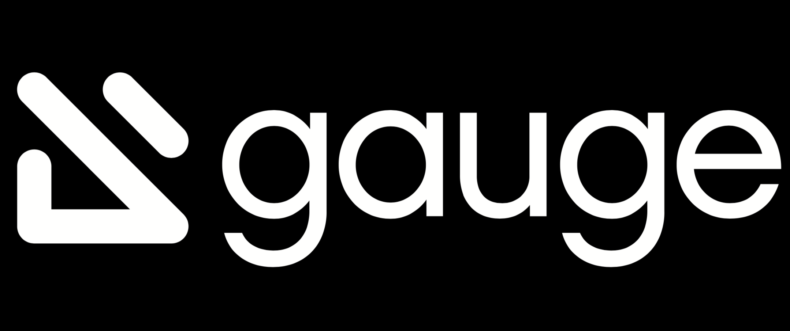

is a test runner that makes it easy to express your tests in the language of your users.
is a browser automation tool that makes it easy to drive your web browser with a friendly Domain-Specific Language (DSL).